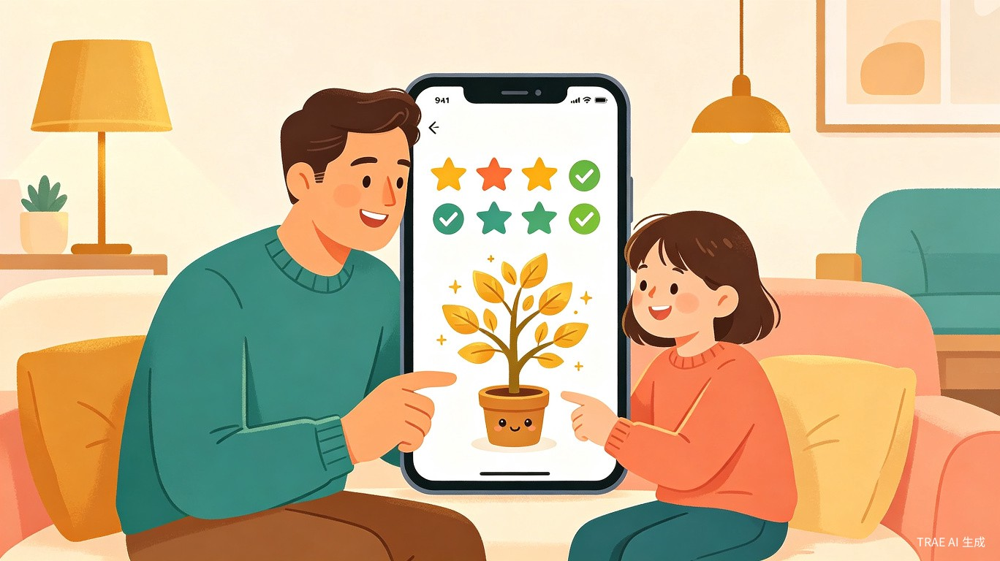
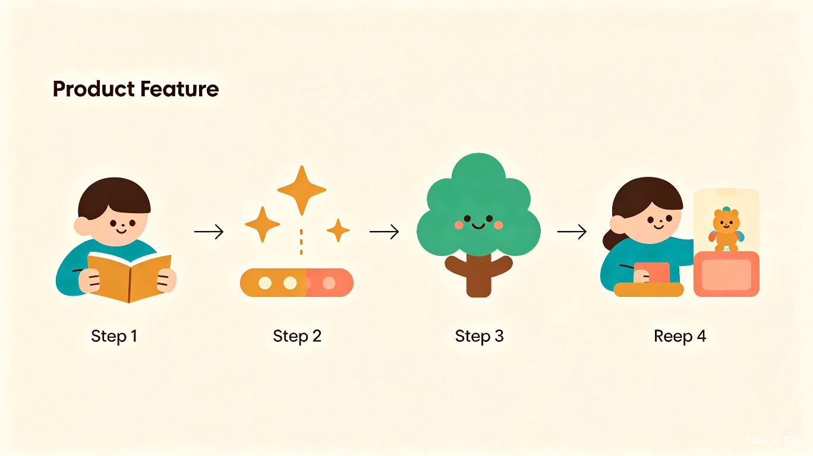

创意概览
创意名称与介绍
创意名称：AI 成长积分
想解决什么问题：许多家长在日常育儿中面临一个普遍困境——孩子缺乏自律动力，家长反复催促效果甚微，而传统的"吼叫+惩罚"方式不仅低效，还容易破坏亲子关系。家长需要一个科学、温和、有趣的工具来引导孩子养成好习惯。
为什么会想到做这个：在身边很多有孩子的朋友中，"孩子不爱写作业""起床磨蹭""沉迷手机"几乎是共同的焦虑。市面上的习惯打卡类 App 要么功能过于复杂，要么缺乏个性化引导，孩子用几天就失去兴趣。我认为 AI 可以让这个过程变得更智能、更有温度——不只是冷冰冰的记录，而是真正理解孩子、因材施教。
产品形态：一款面向家长的移动端 Web App，家长端设置任务和奖励规则，孩子端通过完成日常任务获得积分、兑换奖励，同时 AI 根据孩子的行为数据提供个性化教育建议。
目标用户及痛点
核心用户群体：5-14 岁儿童的家长（尤其是 25-45 岁的一二线城市职场父母），以及作为参与者的孩子本人。
使用场景：
- 每日晨间：家长设置起床、刷牙、整理书包等任务，孩子完成后打卡赚取积分
- 课后时段：作业完成、阅读 30 分钟、练习乐器等学习任务的管理与激励
- 周末/假期：户外运动、家务劳动、兴趣学习等额外任务的灵活配置
- 亲子沟通：家长通过 App 查看孩子的习惯报告，了解孩子的成长趋势和薄弱环节
当前痛点：
- 家长每天反复口头催促，耗费大量精力，效果却越来越差
- 惩罚式教育容易引发孩子的逆反心理和抵触情绪
- 缺乏客观的数据反馈，家长难以判断孩子的习惯养成进度
- 现有打卡工具千篇一律，孩子新鲜感过后很快放弃使用
- 多孩家庭难以分别管理，缺乏统一的激励体系
核心功能设计

智能任务管理
家长可按场景（学习日/周末/假期）快速配置每日任务清单，支持自定义任务名称、分值和截止时间。AI 根据孩子年龄自动推荐适龄任务模板。
积分抽奖兑换系统
积分按不同档次对应不同的"奖池"，每个奖池包含多个家长自定义的奖励。孩子消耗积分进入对应档次的奖池，通过抽奖方式随机获得一个奖励，增加惊喜感和期待感。
成长树养成
虚拟成长树随积分累积而长大，给孩子持续的视觉成就感和陪伴感。连续打卡天数越多，树长得越快，解锁不同阶段的专属成就。
AI 个性化建议
AI 分析孩子的任务完成数据，识别薄弱环节（如"本周阅读任务完成率仅 30%"），向家长推送个性化教育建议和调整方案。
成长报告
自动生成周报/月报，展示任务完成率趋势、进步亮点、连续打卡记录，帮助家长全面了解孩子的习惯养成状况。
AI 鼓励互动
孩子完成任务时，AI 生成个性化的鼓励话语（而非固定模板），让孩子感受到被关注和认可。支持家长自定义鼓励风格。
抽奖兑换系统详细设计
这是本产品最具特色的核心玩法。与传统"积分直接兑换"不同，抽奖机制让每一次兑换都变成一次令人期待的"开盲盒"体验，极大提升孩子的持续参与动力。
档次与奖池设计
家长可自定义积分档位和每个档位对应的奖池内容。以下为推荐的四档设计：
| 档次 | 消耗积分 | 奖池示例 | 抽奖动画 |
|---|---|---|---|
| 青铜奖池 | 10 积分 | 多看 15 分钟动画片 / 多吃一颗糖 / 选今晚晚餐的一道菜 / 多玩 10 分钟游戏 | 简约转盘 |
| 白银奖池 | 30 积分 | 周末去公园 / 买一本喜欢的课外书 / 和爸爸下一盘棋 / 今日免做一项家务 | 宝箱开启 |
| 黄金奖池 | 80 积分 | 周末看电影 / 去游乐园玩半天 / 买一个小玩具 / 和朋友约一次聚会 | 星光抽奖机 |
| 钻石奖池 | 200 积分 | 暑假旅行目的地选择权 / 获得一件心愿礼物 / 一整天的"自由支配日" / 参加一次夏令营 | 华丽烟花特效 |
抽奖流程
选择档次
孩子查看自己当前积分，选择想要挑战的奖池档次。系统自动判断积分是否足够，不足时提示"还差 X 积分就能解锁"。
消耗积分
确认抽奖后，对应积分立即扣除（防止后悔机制：抽奖前需二次确认）。积分扣除后不可退还，培养孩子的决策能力。
抽奖动画
播放对应档次的抽奖动画（转盘/宝箱/抽奖机/烟花），动画时长 3-5 秒，营造紧张刺激的氛围。不同档次动画华丽度递增。
揭晓奖励
动画结束后揭晓抽中的奖励，配合庆祝音效和 confetti 特效。奖励自动记录到"我的奖品"列表，孩子可随时查看。
家长管控功能
自定义奖池内容
家长可自由编辑每个档次奖池中的奖励项，添加、删除或调整。支持设置"保底奖励"——即使运气不好，也能获得一个基础奖励。
抽奖频率限制
家长可设置每个档次的每日/每周抽奖次数上限，防止孩子过度沉迷抽奖而忽视任务本身。例如"青铜奖池每日最多 3 次，钻石奖池每周最多 1 次"。
抽奖记录
家长可查看孩子的完整抽奖历史，了解孩子的偏好（比如总抽"多看动画片"说明孩子对屏幕时间有强烈需求），据此调整奖池内容和育儿策略。
概率权重设置
家长可为每个奖池中的奖励设置不同的中奖概率权重。比如黄金奖池中"去游乐园"概率 10%、"买小玩具"概率 40%，让稀有奖励更有价值感。
为什么抽奖比直接兑换更好
持续的新鲜感
直接兑换孩子很快会"算清楚账"，失去期待。抽奖的不确定性让每次兑换都充满惊喜，即使相同积分也能获得不同体验。
延迟满足训练
孩子为了进入更高档次的奖池，会主动积攒积分、延迟小奖励的满足感，这在心理学上是对"延迟满足"能力的有效训练。
决策能力培养
孩子需要思考：是现在花 10 积分抽青铜奖池，还是攒到 200 积分挑战钻石奖池？这种选择过程本身就是一种决策训练。
情绪管理练习
抽奖结果有喜有憾，孩子在"没抽到最想要的"时学会接受和调整心态，家长可借此引导孩子正确面对得失。
价值与意义
家庭教育效率提升
将家长从每日反复催促中解放出来，用系统化的积分机制替代口头管理，让习惯培养更科学、更高效。AI 的个性化建议帮助家长因材施教，而非一刀切。
亲子关系改善
以正向激励替代惩罚式教育，减少家庭冲突。孩子通过完成任务获得成就感和自主感，家长通过成长报告了解孩子，促进良性亲子互动。
儿童自律能力培养
游戏化的积分体系让孩子从"被动服从"转变为"主动完成"，逐步建立内在驱动力。成长树的视觉反馈帮助孩子理解"坚持就有收获"的道理。
社会公益价值
关注青少年身心健康与习惯养成，响应"双减"政策下素质教育方向。产品可免费提供给学校和社区使用，助力普惠家庭教育。
技术实现方案
本产品计划使用以下技术栈实现，充分利用 AI 能力降低开发门槛：
核心 AI 能力包括：任务完成数据的智能分析、个性化教育建议生成、动态鼓励语生成、适龄任务模板推荐。所有 AI 功能均可通过调用大语言模型 API 实现，无需自建模型。
差异化优势
与市面现有产品（如"小习惯""成长树"等）相比，本产品的核心差异化在于：
- AI 驱动的个性化：不只是记录打卡，AI 主动分析数据并给出教育建议，真正成为家长的"育儿助手"
- 正向激励设计：弱化惩罚概念，用成长树、成就徽章、愿望清单等游戏化元素激发内在动力
- 亲子共创模式：孩子参与制定任务和奖励规则，而非家长单方面规定，增强孩子的参与感和责任感
- 多孩家庭支持：支持多个孩子的独立管理 + 兄弟姐妹协作任务，解决多孩家庭的特殊需求